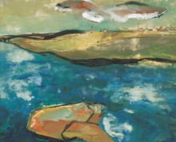
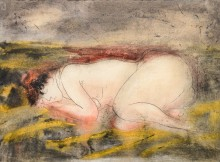

EMIL SCHUMACHER
DAS FRÜHE WERK UND DIE SAMMLUNG LEPKE
27. November 2022
DAS FRÜHE WERK UND DIE SAMMLUNG LEPKE
verlängert bis 30. Juli 2023
Diese Ausstellung ist schon lange ein besonderes Desiderat gewesen, handelt es sich doch um die Präsentation einer ganz besonderen Kollektion von Werken Emil Schumachers, nämlich aus historischer Sammlersicht. Die Sammler waren Ruth und Rudolf Lepke, deren Sohn Rudolf Jr. die Sammlung der Eltern nicht nur übernahm, sondern gemeinsam mit seiner langjährigen Lebensgefährtin über Jahrzehnte pflegte und erhielt. Die musische Kaufmannsfamilie, Gesellschafter eines aus einem Kolonialwarengeschäft hervorgegangenen und bereits in der vorangegangenen Generation 1897 gegründeten Lebensmittel- und Feinkostgroßhandels, lebte generationenübergreifend bis in unsere Zeit mit der Kunst, nicht nur Emil Schumachers. Zahlreiche befreundete Künstlerinnen und Künstler der bildenden Künste wie Elisabeth Schmidt, Anselm Treese, Wilhelm Wessel und Irmgartd Wessel-Zumloh, Roswitha Lüder und Rudolf Vombek gingen im kunstsinnigen Haus der Lepkes ein und aus. Manche Künstler wurden durch die Sammelleidenschaft der Lepkes maßgeblich gefördert.
Auch für Emil Schumacher führte die erste Begegnung mit Lepkes 1946 zu einer entscheidenden Sammlerfreundschaft. Das Ehepaar hatte ein Werk des noch völlig unbekannten Malers im Atelier des Bildhauers Karel Niestrath (1896 - 1971) entdeckt, dort spontan erworben und durch Vermittlung des älteren Künstlers auch den persönlichen Kontakt gesucht. In der unmittelbaren Nachkriegszeit waren Bilderverkäufe für den Maler am Neubeginn seiner Laufbahn und als junger Familienvater existenziell. Dank der Lepkes und einer kleinen Gruppe von Hagener Sammlern wie den Familien Maria und Fritz Breuer, Helene und Adalbert Borgers sowie Norgard und Adolf Voss, war es ihm überhaupt nur möglich, als Maler voranzukommen. Gerade diese frühe Förderung, noch bevor Kunstkritik und Museen auf ihn aufmerksam geworden waren, ermöglichte es Emil Schumacher, sich auf seine Kunst zu konzentrieren und schließlich als einer der wichtigsten Vertreter einer neuen Künstlergeneration aus der jungen Bundesrepublik zu internationaler Anerkennung zu gelangen.
Lepkes begleiteten Schumacher als Sammler bis in die 1970er-Jahre. Die persönliche Zuneigung blieb jedoch auch darüber hinaus generationenübergreifend bis zum Tod von Emil und Ulla Schumacher bestehen. Heute ist die Sammlung Lepke die einzige nahezu geschlossen erhaltene Sammlung aus diesen Jahren in Privatbesitz. Sie ist geprägt vom Neuaufbruch im Werk des noch stark vom späten Expressionismus seiner Professoren an der Kunstgewer-beschule in Dortmund geprägten Künstlers (Studium von 1932 – 1934) sowie dem persönlichen Geschmack der insbesondere auch literarisch gebildeten Sammler. Insbesondere das gemeinsame Interesse an Literatur verband die Ehepaare. Zeichnungen der kleinen Söhne verweisen aber auch auf ähnliche Lebenssituationen.
Download: Pressetext

Emil Schumacher, Flusslandschaft mit Stein, 1947, Gouache und Tuschzeichnung, 50,5 x 62,5 cm, Sammlung Lepke, Foto: Emil Schumacher Stiftung/Ralf Cohen. © VG Bild-Kunst, Bonn 2023.
Emil Schumacher, Flusslandschaft mit Stein, 1947, Gouache und Tuschzeichnung, 50,5 x 62,5 cm, Sammlung Lepke, Foto: Emil Schumacher Stiftung/Ralf Cohen. © VG Bild-Kunst, Bonn 2023.
{kind=link}
{kind=link}

Emil Schumacher, Liegender Akt, 1946, Aquarell und Tuschzeichnung, 31,5 x 42,5 cm, Sammlung Lepke, Foto: Emil Schumacher Stiftung/Joachim Schwingel. © VG Bild-Kunst, Bonn 2023.
{kind=link}
Emil Schumacher, Liegender Akt, 1946, Aquarell und Tuschzeichnung, 31,5 x 42,5 cm, Sammlung Lepke, Foto: Emil Schumacher Stiftung/Joachim Schwingel. © VG Bild-Kunst, Bonn 2023.